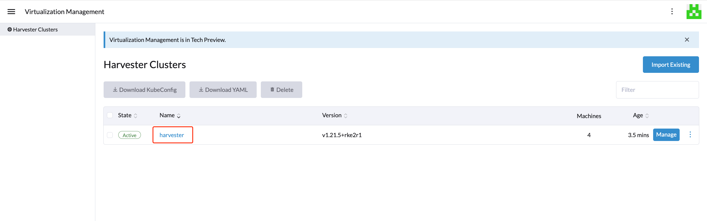
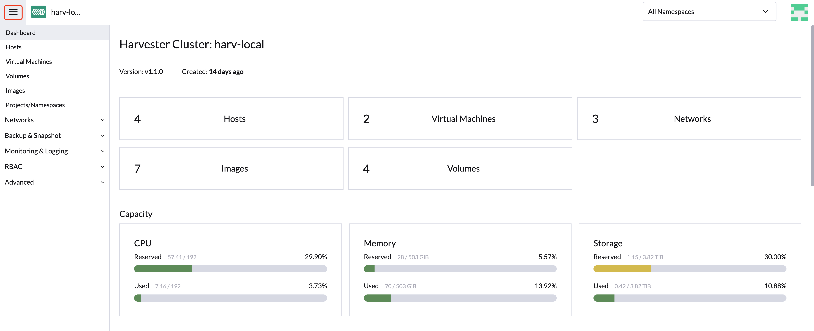

仮想化管理
Rancherの仮想化管理機能を使用すると、複数のSUSE Virtualizationクラスターをインポートおよび管理できます。これは、単一の画面から仮想化とコンテナ管理を統合するソリューションを提供します。
Rancherをデプロイし、さまざまなクラウドプロバイダーを使用してKubernetesクラスターをプロビジョニングする方法については、 サーバーSUSE Rancher Primeのデプロイを参照してください。
SUSE Virtualizationクラスターのインポート
-
UI
-
API
-
コンテナイメージを確認し、準備します。
インポート作業を円滑に進めるために、`cattle-cluster-agent-*`という名前の新しいポッドがSUSE Virtualizationクラスターに作成されます。このポッドで使用されるコンテナイメージは、Rancherサーバーのバージョンに依存します（例えば、Rancher v2.7.9を実行している場合は、イメージ`rancher/rancher-agent:v2.7.9`が使用されます）。さらに、この動的イメージはSUSE Virtualization ISOにパッケージ化されておらず、インポート中にリポジトリからプルされます。
もしあなたのSUSE Virtualizationクラスターがインターネットから直接アクセスできない場合は、次のいずれかのアクションを実行してください：
-
クラスター用にプライベートレジストリを構成し、イメージを追加します。Harvesterはこのレジストリから自動的にイメージをプルします。
-
外部サービスにアクセスするためにHTTPプロキシを構成した場合は、それが期待通りに動作していることを確認してください。Harvester設定で指定したDNSサーバーは、ドメイン名`docker.io`を解決できる必要があります。
-
コマンド`docker pull rancher/rancher-agent:v2.7.9 && docker save -o rancher-agent.tar rancher/rancher-agent:v2.7.9`を使用してイメージをダウンロードします。次に、ダウンロードしたイメージのコピーを各クラスターノードに作成し、コマンド`sudo -i ctr --namespace k8s.io image import rancher-agent.tar`を使用してcontainerdにイメージをインポートします。最後に、各ノードで`sudo -i crictl image ls | grep "rancher-agent"`を実行して、イメージが準備完了であることを確認します。
-
-
Rancherサーバーが起動している場合は、ログインしてハンバーガーメニューをクリックし、*仮想化管理*タブを選択します。*既存のインポート*を選択して、ダウンストリームのSUSE VirtualizationクラスターをRancherサーバーにインポートします。

-
`Cluster Name`を指定し、*作成*をクリックします。登録ガイドが表示されますので、対象のSUSE Virtualizationクラスターのダッシュボードを開き、ガイドに従ってください。

-
エージェントノードの準備が整ったら、SUSE VirtualizationクラスターをRancherサーバーから表示およびアクセスできるようになり、VMを適切に管理できます。

エージェントノードが固まった場合は、SUSE Virtualizationクラスターでコマンド`kubectl get pod cattle-cluster-agent-* -n cattle-system -oyaml`を実行してください。次のメッセージが表示された場合は、ステップ1の情報を確認し、このポッドを削除してから、新しいポッドが自動的に作成されてインポート処理が再起動されます。
... state: waiting: message: Back-off pulling image "rancher/rancher-agent:v2.7.9" reason: ImagePullBackOff ... -
SUSE Virtualization UIから、ハンバーガーメニューをクリックしてRancherマルチクラスター管理ページに戻ることができます。

-
Rancher Kubernetesクラスターで、新しい`Cluster`リソースを作成します。
例:
apiVersion: provisioning.cattle.io/v1 kind: Cluster metadata: name: harvester-cluster-name namespace: fleet-default labels: provider.cattle.io: harvester annotations: field.cattle.io/description: Human readable cluster description spec: agentEnvVars: [] -
Cluster`リソースのステータスが更新されたら、.status.clusterName`プロパティからクラスターID（形式：c-m-foobar）を取得します。 -
クラスターIDを持つ名前空間で、クラスターIDを使用して`ClusterRegistrationToken`を作成します。トークンの`.spec.clusterName`フィールドにクラスターIDを指定する必要があります。
例:
apiVersion: management.cattle.io/v3 kind: ClusterRegistrationToken metadata: name: default-token namespace: c-m-foobar spec: clusterName: c-m-foobar -
ClusterRegistrationToken`のステータスが更新されたら、トークンの.status.manifestUrl`プロパティの値を取得します。 -
SUSE Virtualizationクラスターで、設定`cluster-registration-url`をパッチし、クラスター登録トークンの`.status.manifestUrl`プロパティから取得したURLを`value`フィールドに指定します。
例:
apiVersion: harvesterhci.io/v1beta1 kind: Setting metadata: name: cluster-registration-url value: https://rancher.example.com/v3/import/abcdefghijkl1234567890-c-m-foobar.yaml
アップグレード
インポートされたSUSE Virtualizationクラスターをアップグレードするには、Rancher、Harvester UI拡張機能、およびSUSE Virtualizationを特定の順序でアップグレードする必要があります。Harvester UI拡張機能は、Rancher v2.10.x以降のバージョンでSUSE Virtualization UIにアクセスするために必要です。
-
サポートマトリックスを確認して、SUSE Virtualizationクラスターに一致するRancherおよびHarvester UI拡張機能のバージョンを確認してください。
-
Rancherをアップグレードします。
-
Harvester UI拡張機能をアップグレードします。
エアギャップ環境での拡張機能のアップグレードに関する情報は、Harvester UI拡張機能とRancher統合を参照してください。
-
SUSE Virtualizationをアップグレードします。
SUSE Virtualization v1.5.0以降のバージョンの機能は、Harvester UI拡張機能に実装されています。RancherとHarvester UI拡張機能をアップグレードしない場合、これらの機能は利用できない可能性があります。
トラブルシューティング
HarvesterクラスターのRancherへのインポートを参照してください。
マルチテナンシー
SUSE Virtualizationは既存のRancher RBAC認可を活用し、ユーザーがクラスタとプロジェクトの役割に基づいてリソースのセットを表示および管理できるようにします。
Rancher内では、各人がユーザーとして認証され、これはRancherへのアクセスを許可するログインです。 認証で述べたように、ユーザーはローカルまたは外部のいずれかです。
ユーザーがRancherにログインすると、その認可、つまりアクセス権はグローバルパーミッションおよびクラスタとプロジェクトの役割によって決定されます。
-
グローバルパーミッション：特定のクラスタの範囲外におけるユーザー認可を定義します。
-
クラスタとプロジェクトの役割：ユーザーが役割を割り当てられた特定のクラスタまたはプロジェクト内のユーザー認可を定義します。
グローバルパーミッションとクラスタおよびプロジェクトの役割は、 Kubernetes RBACの上に実装されています。したがって、パーミッションと役割の強制はKubernetesによって行われます。
-
クラスタの所有者は、クラスタおよびその内部のすべてのリソース（例：ホスト、VM、ボリューム、イメージ、ネットワーク、バックアップ、設定）に対して完全な制御を持っています。
-
プロジェクトユーザーは、プロジェクト内のリソースを管理する権限を持つ特定のプロジェクトに割り当てられることがあります。
|
ビルトインの役割テンプレートとプロジェクトスコープのRBACを使用してユーザーアクセスを管理することを強く推奨します。 SUSE VirtualizationはKubernetesおよびKubeVirtの上に独自のRBACモデルを実装し、Rancherスタイルのプロジェクトおよびマルチテナンシーロジックと統合しています。アップグレードや再構成中に、カスタム`RoleBindings`が`kubevirt.io`役割のみを参照している場合、失われたり、リセットされたり、SUSE Virtualizationの内部状態と不整合になる可能性があります。 |
マルチテナンシーの例
以下の例は、マルチテナント機能がどのように機能するかを良く説明しています：
-
まず、Rancher `Users & Authentication`ページを介して新しいユーザーを追加します。次に、`Create`をクリックして、`project-owner`と`project-readonly`という2人の新しいユーザーを追加します。
-
`project-owner`は、特定のプロジェクトのリソースリストを管理する権限を持つユーザーです。例えば、デフォルトプロジェクトです。
-
`project-readonly`は、特定のプロジェクトの読み取り専用権限を持つユーザーです。例えば、デフォルトプロジェクトです。

-
-
SUSE Virtualization UIに移動した後、インポートされたSUSE Virtualizationクラスターのいずれかをクリックします。
-
`Projects/Namespaces`タブをクリックします。
-
`default`のようなプロジェクトを選択し、`Edit Config`メニューをクリックして、適切な権限でこのプロジェクトにユーザーを割り当てます。例えば、`project-owner`ユーザーにはプロジェクトオーナーの役割が割り当てられます。

-
-
同じプロジェクトに読み取り専用権限で`project-readonly`ユーザーを追加し続け、*保存*をクリックします。

-
シークレットブラウザを開き、`project-owner`としてログインします。
-
`project-owner`ユーザーとしてログインした後、*仮想化管理*タブをクリックします。そこで、あなたが割り当てられたクラスターとプロジェクトを表示できるはずです。
-
*イメージ*タブをクリックして、以前に`harvester-public`ネームスペースにアップロードされたイメージのリストを表示します。必要に応じて、自分のイメージをアップロードすることもできます。
-
アップロードしたイメージの1つを使用してVMを作成します。
-
別のユーザー、例えば`project-readonly`でログインすると、このユーザーは割り当てられたプロジェクトの読み取り権限のみを持ちます。
|
`harvester-public`ネームスペースは、このクラスターに割り当てられたすべてのユーザーがアクセスできる事前定義されたネームスペースです。 |
インポートされたSUSE Virtualizationクラスターを削除します。
ユーザーは、Rancher UIの仮想化管理画面からインポートされたSUSE Virtualizationクラスターを削除できます。削除したいクラスターを選択し、*削除する*ボタンをクリックして、インポートされたSUSE Virtualizationクラスターを削除します。
関連するSUSE Virtualizationクラスターの`cluster-registration-url`設定をリセットして、Rancherクラスターエージェントをクリーンアップする必要があります。

|
インポートされたSUSE Virtualizationクラスターを削除するために`kubectl delete -f …`コマンドを実行しないでください。そうすると、SUSE Virtualizationクラスターに必要な`cattle-system`ネームスペース全体が削除されます。 |